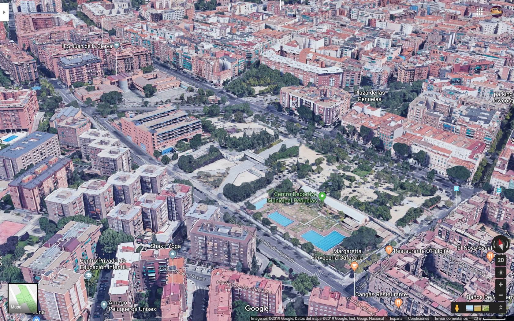

Arganzuela y Peñuelas: de mis bisabuelos a mis hijos
Arganzuela es mi barrio. El barrio donde vivo con mi familia, el mismo en el que un día llegaron mis bisabuelos a construir su vida desde cero. Hay algo que me resulta difícil de explicar cuando paseo por estas calles sabiendo que cuatro generaciones de los míos han pisado estas mismas aceras.
La historia empieza en 1914, el año en que nació mi abuela María Luisa. Sus padres, mis bisabuelos, se habían mudado al barrio de Peñuelas, una de esas zonas del Madrid de principios de siglo que acogía a familias trabajadoras venidas de toda España buscando labrarse un porvenir en la capital.
De los primeros trabajos de mi abuela el que más me ha llegado es el de lavandera en el Manzanares. Me la imagino de joven, en las orillas del río, con las manos en el agua fría, junto a otras mujeres del barrio. Un trabajo duro, de sol a sol, que era moneda corriente para las mujeres de aquella época y aquel Madrid.
Con el tiempo, mi abuela María Luisa se casó con Nicolás, mi abuelo. Vivían en Peñuelas pagando un alquiler, y allí Nicolás se buscaba la vida como podía. Entre sus actividades estaba la de hacer pan de manera clandestina en casa, algo que en aquella época estaba regulado y requería licencia. Fue denunciado varias veces por ello. No debía ser el único del barrio que lo hacía, pero tampoco le quedaba otra: había que comer.
La guerra y el campo de concentración
Llegó la Guerra Civil y mi abuelo Nicolás fue a ella del lado republicano. No sé si fue voluntario o movilizado, pero lo que sí sé es lo que le pasó después: cayó preso en manos de los nacionales y fue enviado a un campo de concentración en Burgos. Allí, entre otras vejaciones, les hacían andar descalzos. Las condiciones eran brutales. Mi abuelo cogió enfermedades, neumonías, que se le instalaron en el cuerpo y de las que nunca llegaría a recuperarse del todo.
El gesto que lo cambió todo
Mientras Nicolás estaba en el frente o preso, mi abuela seguía en Peñuelas con los niños. En algún momento de la guerra, un hombre del bando nacional llamó a su puerta. Estaba buscado por los republicanos, con peligro real de ser ejecutado. Mi abuela, a pesar de que su marido estaba en el bando contrario, le dio cobijo en su casa.
Ese gesto, en medio de una guerra civil donde la desconfianza y el miedo lo impregnaban todo, fue enorme. Y tuvo consecuencias. Cuando acabó la guerra y ganaron los nacionales, aquel hombre no olvidó lo que mi abuela había hecho por él. Buscó a Nicolás, le trajo de vuelta, y como muestra de gratitud le consiguió a mi abuela un trabajo: portera del Sindicato de Ganadería, en la calle de las Huertas, 54, en el Barrio de las Letras.
Ese sindicato, esa calle, ese número, serían el siguiente capítulo de la historia de mi familia. Puedes leerlo en El Barrio de las Letras: Huertas 54.
Standard Eléctrica y las chicas del cable
Curiosamente, la historia de mi familia y la de este barrio no terminan ahí. El edificio donde yo trabajo hoy, el Amazon MAD12 en Arganzuela, fue en su día la sede de Standard Ibérica — la filial española de la multinacional ITT —, una de las grandes fábricas de telecomunicaciones del Madrid del siglo XX. Y allí fue donde trabajó mi tía Mari, en un puesto que recuerda mucho a lo que retrata la serie Las chicas del cable: mujeres operando centralitas, tendiendo líneas, conectando voces a través de un país que intentaba reconstruirse.
Mi padre me cuenta que muchas veces salían a recoger a mi tía del trabajo andando desde la portería de Huertas, cruzando el barrio hasta llegar a la fábrica. Un paseo que hoy haría yo en sentido contrario cada mañana al ir a la oficina, sin saber entonces que pisaba los mismos adoquines.
La huerta y el merendero junto al río
Mi padre también recuerda que los sábados, a veces, bajaban a una huerta que había en la zona entre lo que hoy es el barrio de los Metales y el río Manzanares. Era un sitio donde podías escoger tú mismo los tomates y las lechugas directamente de la tierra, y luego comértelos allí mismo en un merendero anejo. Una imagen que cuesta imaginar hoy mirando esa misma zona, pero que me parece preciosa: el río, la huerta, la familia, los sábados.
El barrio de los Metales: zona prohibida
Yo vivo hoy en la calle Bronce, 37, en ese mismo barrio de los Metales. Pero la historia que me cuenta mi padre de ese lugar en aquella época no tiene nada que ver con el barrio tranquilo y familiar que conozco ahora. Según él, el barrio era extremadamente peligroso, hasta el punto de que había coches de policía permanentemente apostados a la entrada y a la salida para controlar quién entraba y quién salía. La gente del entorno lo rodeaba directamente, sin atravesarlo, para evitar problemas. Era, en la práctica, una zona a la que nadie ajeno a ella se atrevía a entrar.
Me resulta difícil de creer cuando salgo a pasear por aquí con mis hijos, pero así era. El Madrid que vivieron mis abuelos, mi padre y mis tíos era otro Madrid, y estos barrios que hoy son los míos tenían otra cara completamente distinta.
La misma tierra, cien años de diferencia, y cuatro generaciones de mi familia entrelazadas con ella sin que ninguno lo hubiéramos planeado.
Arganzuela y sus Barrios Bajos
El distrito de Arganzuela no es simplemente un lugar de paso o un conjunto de viviendas modernas. Es un territorio configurado por el choque entre la industrialización, las aspiraciones burguesas del Plan Castro y la resistencia cotidiana de las clases populares. Lo que hoy vemos como una zona residencial amable fue en su día un arrabal donde la supervivencia era el motor principal de la vida y el origen de una conciencia social inquebrantable.

La fuente de la Plaza de las Peñuelas hoy, en el mismo enclave donde se reunían los vecinos del barrio obrero.
1. El origen de un nombre: de la peñuela a las fiestas de la Melonera
El nombre de Las Peñuelas tiene su origen en la peñuela de Santa Isabel, un pequeño promontorio en la accidentada orografía de este sector sur de Madrid. Este lugar, que hoy asociamos con el barrio de Acacias y el Paseo de la Esperanza, se convirtió en el hogar de miles de trabajadores tras el derribo de la antigua muralla y el inicio del Plan Castro en 1870.
Uno de los aspectos más curiosos de su vida social eran las Fiestas de la Melonera, celebradas en septiembre a orillas del Manzanares, junto a la ermita de la Virgen del Puerto. Su origen es fascinante: los romeros aprovechaban para degustar los melones y sandías de Villaconejos que los vendedores ambulantes ofrecían en la zona. Esta celebración marcaba históricamente el final del verano y era un símbolo de la identidad obrera frente a las imposiciones culturales del régimen, que más tarde intentó desplazarla por festejos más "castizos" y controlados.

Esquema histórico del barrio de Peñuelas y sus límites, con la estación y el Manzanares al sur.
2. Los gigantes de hierro: Peñuelas e Imperial
La fisonomía de Arganzuela fue dictada por una red ferroviaria interconectada que integraba la periferia industrial con el centro de Madrid. Todo el sistema giraba en torno a la Línea de Contorno, que unía las estaciones de Atocha y el Norte (actual Príncipe Pío). Esta línea fue la arteria que alimentó la industrialización del sur.
| Estación | Apertura | Cierre | Curiosidad |
|---|---|---|---|
| Delicias | 1880 | — | Terminal monumental. Conectaba Madrid con Lisboa vía Cáceres. Hoy alberga el Museo del Ferrocarril. |
| Peñuelas | 1908 | 1987 | Inaugurada como estación de la Alhóndiga, vital para el transporte de aceites, harinas y asfaltos. |
| Imperial | 1881 | 1987 | Conocida popularmente como "estación de las Pulgas" por el ganado que allí se cargaba y descargaba. |
| Príncipe Pío | 1861 | — | Nodo principal de la Compañía del Norte. Conectaba con Irún y distribuía carbón y mercancías hacia el sur. |

Vista aérea histórica de la estación de Delicias. Al fondo, Madrid. A la derecha, la fábrica de cerveza "El águila" y el edificio de Standard Electric . La rotonda de talleres en primer plano es característica de la estación.

La estación de mercancías de Peñuelas en los años 60-70. Donde hoy hay parques y el Pasillo Verde Ferroviario, entonces eran vías, naves y movimiento constante.

Vista exterior de la estación de la Alhóndiga (futura estación de Peñuelas), publicada en Blanco y Negro el 1 de agosto de 1908, año de su inauguración.
Estas instalaciones no solo servían de almacén: fueron lugares de conflicto social, parapeto durante la Guerra Civil y un centro neurálgico donde los vecinos del barrio se ganaban el sustento diario.
3. El mapa de la periferia: Cambroneras, Injurias y Peñuelas
La zona sur, a orillas del río Manzanares, albergó barriadas que hoy forman parte de nuestra memoria histórica:
| Barrio | Ubicación histórica | Características |
|---|---|---|
| Las Cambroneras | Junto al Puente de Toledo | Conocido como el "Albaycín madrileño" por su gran población gitana. Símbolo de la miseria frente a la burguesía; primer asentamiento de muchos emigrados rurales. |
| Las Injurias | Cerca de la Glorieta de Pirámides | Tomó su nombre de un antiguo humilladero. Famoso por las "Casas del Cabrero", desahuciadas en 1906, donde vivían unas setecientas personas de forma comunitaria. |
| Las Peñuelas | Paseo de la Esperanza | El promontorio que dio nombre al barrio. Corazón obrero donde se combinaba el trabajo duro con tradiciones únicas como La Melonera. |

Una calle de las barriadas en los alrededores de Peñuelas. El cartel de RENFE a la izquierda da cuenta de la omnipresencia del ferrocarril en la vida del barrio.

Esquema histórico del entorno de la estación Imperial, con el Manzanares, el Paseo de los Melancólicos y los puentes que vertebraban el barrio.
4. La crónica de la miseria y el compromiso revolucionario
Escritores como Pío Baroja retrataron con crudeza esta zona en obras como La Busca. El panorama era desolador: infraviviendas, "casas de patio" donde convivían familias enteras y el constante desprecio de la prensa de la época hacia los "barrios bajos". Sin embargo, de esta misma miseria brotó una conciencia rebelde que marcó el siglo XX.
Muchos de sus habitantes procedían de zonas rurales de Andalucía y La Mancha, huyendo de la pobreza extrema y del caciquismo, lo que creó una comunidad unida por el origen común y la necesidad de sobrevivir. De aquí surgieron figuras como Lucía Sánchez Saornil, nacida en la calle Labrador en 1895, figura fundamental del anarcofeminismo y cofundadora de Mujeres Libres, organización que llegó a tener 20.000 afiliadas.
Ante el abandono institucional, el barrio respondió con autoorganización. Maestros como Jesús García Ricote lucharon por educar a los hijos de la clase obrera, convirtiendo la educación en una herramienta de liberación. Ese espíritu sigue vivo hoy en la Fundación Anselmo Lorenzo y el Ateneo La Maliciosa.

Vista aérea de la zona de Peñuelas en la actualidad. El Centro Deportivo Municipal ocupa parte de lo que fueron vías y terrenos ferroviarios. La Plaza de las Peñuelas, en el centro, conserva su fuente histórica.
5. El agua como símbolo y el legado actual
En 1864, el fotógrafo Alfonso Begué inmortalizó la fuente vecinal de la Plaza del Barrio de las Peñuelas. Esta imagen, conservada en los fondos de Memoria de Madrid, es el símbolo de la necesidad y el encuentro. Aquella fuente era el punto de cohesión donde se compartía información y se tejían las redes vecinales.

La fuente de la Plaza de las Peñuelas fotografiada por Alfonso Begué en 1864. Al fondo, el paisaje abierto y despoblado del sur de Madrid. Fondos de Memoria de Madrid.
Hoy, el antiguo trazado de las vías ferroviarias ha desaparecido bajo el proyecto del Pasillo Verde Ferroviario, dando paso a parques y centros deportivos como el Marqués de Samaranch. La fuente sigue en pie, en la misma plaza, rodeada ahora de árboles y niños. La misma piedra, ciento sesenta años después.
6. La industria y las "Chicas del Cable": Standard Eléctrica
Arganzuela también fue un motor industrial de primer orden. La presencia de Standard Eléctrica — filial española de la multinacional ITT — fue fundamental para la economía local. Esta fábrica no solo producía equipos de telefonía; fue un espacio donde cientos de mujeres trabajadoras, conocidas popularmente como las "chicas del cable", desempeñaron un papel crucial en la modernización de las comunicaciones en España.

Vista aérea histórica de la fábrica de Standard Eléctrica en Arganzuela. Al fondo, las vías ferroviarias de la línea de contorno. El edificio central con el letrero "Standard Eléctrica S.A." es claramente visible. En este mismo solar trabaja hoy el autor de este blog, en las oficinas de Amazon MAD12.
Este colectivo femenino fue pionero en la incorporación de la mujer al mundo laboral industrial en Madrid, enfrentándose a las duras condiciones de trabajo de la época y participando activamente en las movilizaciones sindicales que buscaban mejores salarios y mayor dignidad.
Mi tía Mari trabajó en Standard Ibérica — así se llamó la empresa en su etapa española — en un puesto muy similar al que retrata la serie Las chicas del cable. Mi padre me cuenta que muchas veces salían andando desde la portería de la calle Huertas a recogerla al salir del trabajo. Un paseo que hoy hago yo en sentido contrario cada mañana al llegar a la oficina, sin saber entonces que pisaba los mismos adoquines.
Visitar hoy el Paseo de los Melancólicos o la Plaza de las Peñuelas es transitar sobre las huellas de miles de personas que construyeron Madrid con su esfuerzo. La desromantización de estos "barrios bajos" es necesaria: no eran lugares de delincuencia, sino espacios de supervivencia donde surgió un compromiso social que definió la historia del Madrid del siglo XX.


{kind=link}